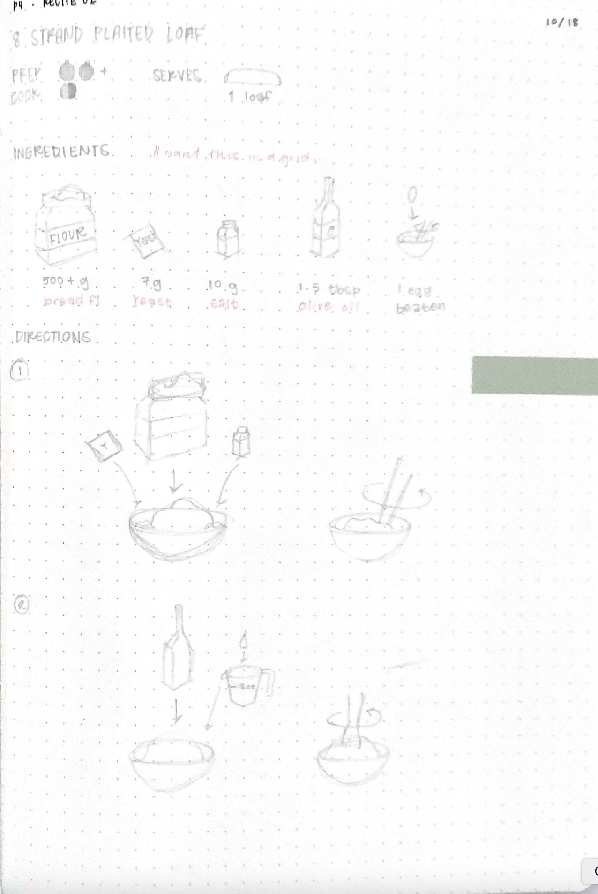

Designing a Visual System
Design concepts and ideas were fleshed out first with pencil sketches.
Refining the System
Aspects including scale, visual communication methods and cohesiveness were addressed and refined on Adobe Illustrator. A light and simple color palette was applied.
Applying the System
Once solidified, the visual system was applied to a mobile application in Figma. Animations were created to better communicate complicated ideas.